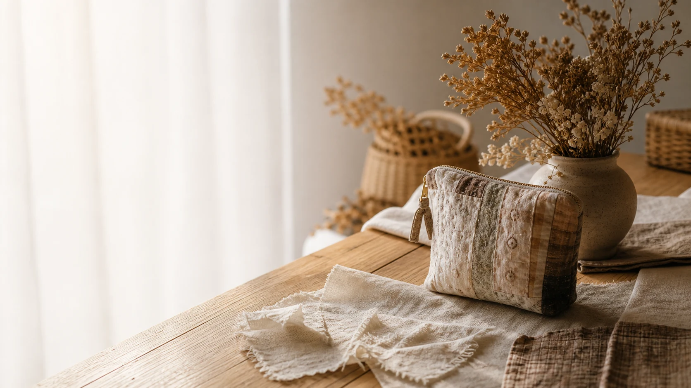

STORY 01
帯・織物 → テーブルランナー
身にまとう柄を、
部屋に飾る柄に。
長く流れる織り柄は、花器を置く場所にも。
帯が持っていた華やかさを、
テーブルや玄関で楽しむ一枚です。

THE TRANSFORMATIONS
ひとつずつの作品を、
素材の名前から、たどってみる。
STORY 01
帯・織物 → テーブルランナー
長く流れる織り柄は、花器を置く場所にも。
帯が持っていた華やかさを、
テーブルや玄関で楽しむ一枚です。
FROM THE MAKER
帯の織り、古布の柄、着物地の光沢。
素材の特徴は、そのまま作品の特徴になる。
リメイクアーティストonlyyuukaは、
布のよさを次の使い方につなげる作品を制作しています。
LET’S MAKE SOMETHING
作品についてのご質問、展示やコラボレーションのご相談。
まだ具体的に決まっていなくても、お聞かせください。